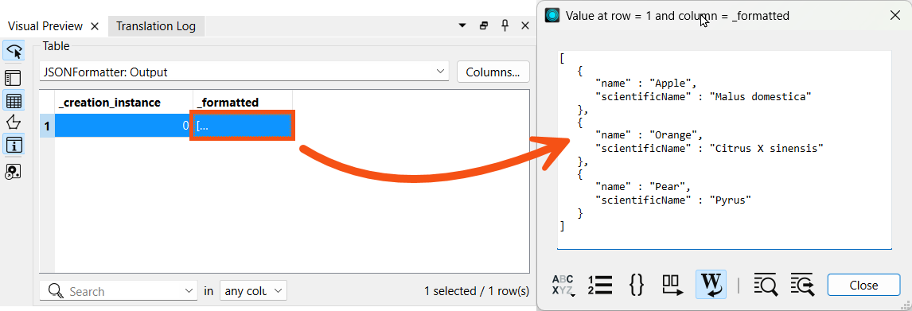
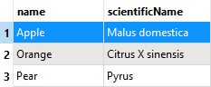
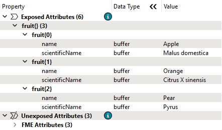
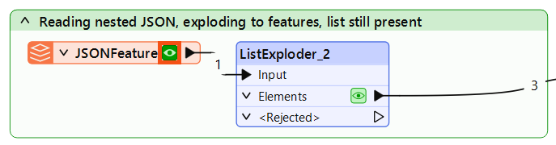
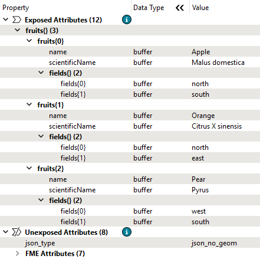
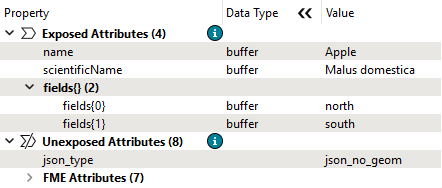

As is common practice in computer programming, list indexes in FME start at 0, not 1.
After completing this lesson, you’ll be able to:
List attributes, sometimes called lists, are FME's way of allowing an attribute to store multiple values per feature. For example, rather than creating a text field named FRUITS that stores the value “Apple, Orange, Pear”, a user can create a list, which is more structured and can be broken down into constituent parts for processing:
Fruits{0}: Apple Fruits{1}: Orange Fruits{2}: Pear
In FME, list attributes are denoted using curly brackets after the list name (e.g., this list is called Fruits{}), and a number inside the curly brackets represents the element's index inside the list, e.g., Orange is element 1 in the list. This structure allows list attributes to be reorganized, exploded into individual parts, analyzed statistically, and more.
As is common practice in computer programming, list indexes in FME start at 0, not 1.
Data can be modeled in a wide variety of ways. Some of the most common methods include:
List attributes in FME can be used to deal with these different data models in a single workspace.
Flat file databases are composed of tables that do not store relationships with other tables. These databases are intentionally simple and often small. Often, the data is stored as delimited text files, but it can also use binary data.
Flat file databases are easy to read with FME using readers from formats like CSV or Text File. In this case, list attributes are not required unless you want to store data about a one-to-many relationship on features (more on that below).
Relational databases store data in tables that can be linked to each other through defined relationships. FME can process relational data simply without the use of list attributes.
Here is an example from the United States Department of Transportation. A relational data model stores separate tables defining road maintenance activities and events. These tables can be linked by a shared key, in this case, an Activity Code:

FME would read each table as a feature type, with each row becoming a feature. In this case, list attributes are not required unless you want to store data about a one-to-many relationship on features (more on that below).
Object-oriented data models store data on objects, commonly as a key-value pair.
Consider a similar dataset to the one above. The same data could instead be stored using an object-oriented model, where one object is a Maintenance Report and another is a definition of a Maintenance Activity. Data is stored as instances of these objects and can be linked by the values of specific key-value pairs, in this case, the value of Activity Code:

List attributes let you store object-oriented data in FME's feature-based or table-based framework.
When incorporating Python or R code into your workspace using the PythonCaller or RCaller, you can read Python or R lists/arrays as FME list attributes after executing the code.
List attributes can also represent a nested data structure within FME's feature-based paradigm.
For example, you can store the following JSON:
[{"name": "Apple","scientificName": "Malus domestica"},{"name": "Orange","scientificName": "Citrus X sinensis"},{"name": "Pear","scientificName": "Pyrus"}]
as an FME list attribute:
Fruits{0}.name: Apple Fruits{0}.scientificName: Malus domestica Fruits{1}.name: Orange Fruits{1}.scientificName: Citrus X sinensis Fruits{2}.name: Pear Fruits{2}.scientificName: Pyrus
Working with JSON and XML in FME requires deciding how to extract the nested structure into a mix of FME features and list attributes.
For more on working with nested data structures, see Getting Started with JSON or Getting Started with XML.
You can inspect list attributes using the Feature Information Window. Select the feature you want to inspect. You will notice that list attributes are not included as attributes in Table View. Instead, look for the attribute in the Feature Information Window under Exposed or Unexposed Attributes. Each index and value will have its own row in the tree. You can double-click an item to inspect the full value.

Because they contain more values than can fit in a single cell of the Table View, list attributes cannot be exposed and will not appear in Table View or, in most cases, in written data. Several transformers are available to help you extract data from list attributes and use it in your workspace or written data (see the next lesson).
List attributes have many use cases within FME because they let a single attribute store multiple values per feature.
Reading and writing data
Some data formats commonly use lists when read and written using FME. In addition to nested markup languages like XML and JSON discussed above, you might also encounter lists when reading:
Express relationships
For example, listing the names of all the stores in a neighborhood in a list called Store_Names{}. FME transformers that conduct spatial analysis, like the Overlayer family of transformers, often generate list attributes like this.
"Looping" with FME
Many new FME users ask how to create loops in a workspace. While custom transformers do support looping, you can almost always accomplish the desired goal using one of two superior methods:
List attributes can be used to avoid loops by storing all the relevant values in a list and then using a list transformer like those shown here to explode, search, sort, or otherwise extract values to find the desired information. An advantage is that list attributes process much quicker than loops. Even if you do use looping in a custom transformer, it's easier to apply a custom transformer loop to elements in a list than to a series of features.
For an example of these techniques in action, check out Question of the Week: To Loop or Not to Loop from the FME Community.
List attributes can be manually built, created automatically by a transformer, read and written by some formats (e.g., XML and JSON), or "exploded" into single-value attributes. FME has 15 transformers for list manipulation (plus more on FME Hub; see the next lesson for details), and over 80 transformers can produce list attributes. Transformers often create a list when attributes from different features are grouped into a single feature. Transformers that create list attributes usually have a "Generate List" checkbox under the "Attribute Accumulation" section of their parameters dialog:
Checking "Generate List" can significantly impact workspace performance, as list attributes can drastically increase the size of individual features. It's best practice only to check this box when needed and remove list attributes as soon as possible so they do not unnecessarily slow down your workspace. For more performance tips, check out the Optimize Workspace Performance course.
To learn more, visit About List Attributes in the documentation.

Jennifer is new to working with list attributes. She has created a workspace to better understand them and experiment with reading JSON, building lists, and exploding lists into FME features.
She opens the starting workspace (C:\FMEData\Workspaces\AdvancedDataTransformation\what-are-list-attributes.fmw) in FME Workbench (2025.0.1 or later).
This workspace reads JSON and turns the contents into an FME list attribute.
Jennifer runs the workspace to generate caches.
Jennifer reviews each section of the workspace in turn to better understand list attributes.
The top section reads the JSON file fruit.json as an attribute using the JSONFormatter transformer. She inspects the JSONFormatter's Output port and double-clicks the sole feature's _formatted attribute in Visual Preview:

The formatted JSON is displayed:
[
{
"name": "Apple",
"scientificName": "Malus domestica"
},
{
"name": "Orange",
"scientificName": "Citrus X sinensis"
},
{
"name": "Pear",
"scientificName": "Pyrus"
}
]
Because this JSON doesn't have complex nesting, it's easy to convert to FME features.
The JSONFeature feature type, below the JSONFormatter, reads the JSON directly as FME features. Each element in the JSON array becomes a feature with attributes name and scientificName.
Jennifer inspects the JSONFeature feature cache to see how the JSON is represented as FME features:

The JSON reader takes the top element in the JSON object and turns each element into a feature, with the key-value pairs becoming FME attributes and values.
Next, Jennifer used a ListBuilder to create a list from the FME features. This fruit list contains three elements, each with an attribute-value pair for name and scientificName.
She inspects the ListBuilder's Output port. Because the new feature only contains a list attribute, no schema is displayed in the Table view, but selecting the single feature lets her view the fruit list in the Feature Information Window:

Jennifer wanted to move from a list attribute to FME features. She did this using a ListExploder on the fruit list attribute.
She inspects the ListExploder's Elements cache. FME exploded her list attribute into features, creating attributes from the key-value pairs:
Jennifer is curious how FME handles nested data structures. She adds a fields attribute to her JSON that indicates which farm fields the fruit is grown in, using an array of cardinal directions.
She reads this new fruit-nested.json into an attribute using the JSONFormatter_2. She inspects its cache and sees the nested JSON in the _formatted attribute:
{ "fruits" : [ { "name" : "Apple", "scientificName" : "Malus domestica", "fields" : [ "north", "south" ] }, { "name" : "Orange", "scientificName" : "Citrus X sinensis", "fields" : [ "north", "east" ] }, { "name" : "Pear", "scientificName" : "Pyrus", "fields" : [ "west", "south" ] } ]}
What happens if she reads this nested JSON using a JSON reader?
She inspects the JSONFeature cache at the bottom of the workspace to find out.

It reads fruit-nested.json and creates key-value pairs from the top-most elements in the array. Because this JSON file's top-level object is an array called fruits, FME reads a single feature with no exposed attributes and creates a nested fruits list attribute. Jennifer views this in the Feature Information Window, noting how nested structures are displayed as list attributes containing other list attributes:

Even with this nested structure, Jennifer can create FME features by exploding the fruits list. She used the ListExploder_2 to do so.
She inspects its Elements cache and sees that the non-list attributes are properly exploded onto three features:
But what happened to the fields list? It's still present on the features as a list attribute, which she can view using the Feature Information Window:

Jennifer would like to create more features so there is a feature per fruit, per field. This would result in many features with a schema like this:
Attribute(string: UTF-8) : `fields' has value `north'Attribute(string: UTF-8) : `name' has value `Apple'Attribute(string: UTF-8) : `scientificName' has value `Malus domestica'
How can she do that? To accomplish this task, help her out by adding a transformer to the Exercise bookmark.